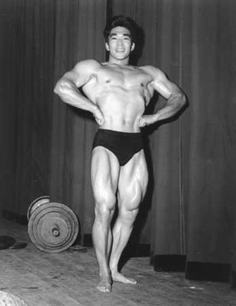
Тощий, больной астмой ребенок по имени Тамио Коно начал свою спортивную (!) карьеру в очень неподходящем месте – в лагере для интернированных японцев в США. Во время второй мировой войны он вместе с семьей были выселены из своего дома в Сан-Франциско и помещены в специальное поселение (фактически, концлагерь) в пустынном районе Калифорнии. Три с половиной года они жили там в ужасных условиях, терпя лишения и издевательства от своих “хозяев”. Несмотря на плохое окружение, горячий сухой воздух сделал свое дело, и Тамио неожиданно излечился от астмы, а кроме того, стал заниматься тяжелой атлетикой в местной “качалке”.
Юноша продолжал заниматься поднятием тяжестей и после окончания войны, став со временем незаменимым членом американской национальной команды тяжелоатлетов. Несмотря на то, что его семья не могла выехать из лагеря, Тамио выступал за американскую команду, поднимая все больший вес. Его уникальная особенность была в том, что Тамио мог в широких пределах изменять свой вес – от 67 до 89 килограмм за свою карьеру. Это позволяло ему выступать в различных весовых категориях, “затыкая дыры” в списке спортсменов. Для того, чтобы поднять вес, он ел 6 –7 раз в день, а чтобы похудеть, снижал свои аппетиты до 2-3 раз.
Первую олимпийскую медаль в легком весе Тамио выиграл в 1952 году, в 1956 – в полутяжелом, в 1960 – в среднетяжелом. За свою карьеру он поставил 7 олимпийских и 26 мировых рекордов. Кроме этого, Тамио Коно был обладателем титула Мистер Вселенная три раза – неплохо для бывшего дохляка весом 47 килограмм.
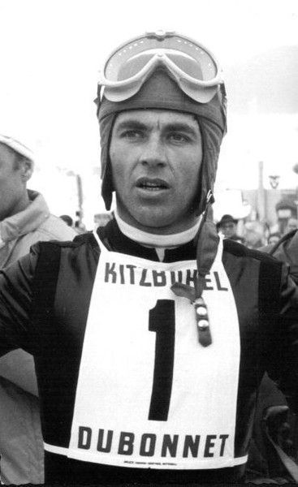
Француз Жан-Клод Килли очень хорошо выступил на слаломе в 1968 году на Олимпиаде в Гренобле. Ему осталось лишь показать наилучший результат в слаломе, поэтому он прошел трассу довольно быстро. Его соперник, австриец Карл Шранц, также стартовал неплохо, но не доехав до финиша, остановился. На вопросы судей, в чем дело, он утверждал, что посредине трассы дорогу ему перебежал какой-то человек в черной одежде, из-за чего он не смог продолжить спуск. По правилам считается, что на трассе в момент спуска спортсмена не должно быть посторонних, поэтому Шранц потребовал повторного старта. При повторном спуске он показал очень хороший результат, победив Жан-Клода.
Однако, после детального анализа ситуации судьи решили отдать победу в этом состязании Жан-Клоду, потому что, как оказалось, Карл пропустил одну из контрольных точек при прохождении трассы, после чего остановился и утверждал, что на его пути был какой-то посторонний человек. Никто из судей не видел посторонних на трассе, поэтому Шранц был дисквалифицирован, а медаль досталась Жан-Клоду.
Позже сторонники Жан-Клода утверждали, что его соперник выдумал мифического человека в черном, чтобы скрыть свою ошибку при прохождении, а Карл, в свою очередь, был уверен, что судьи из местных, а также полиция, специально помешали ему пройти трассу, чтобы отдать победу местному спортсмену.
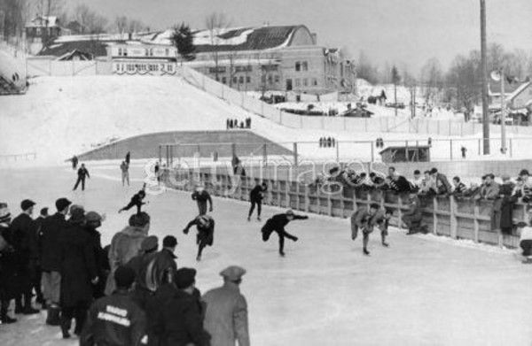
Американцы умеют хорошо зарабатывать деньги, но что касается честности в спортивных состязаниях, так сказать уже не получается. Например, рассмотрим олимпиаду в Лейк-Плейсиде в 1932 году. Есть такой вид спорта – конькобежный спорт, где участники с большой скоростью двигаются по круговой траектории. Европейские спортсмены привыкли двигаться по катку в одиночку, как это происходит на играх в Ванкувере. Однако, когда они прибыли на игры в Америке, оказалось, что в процесс внесли коррективы, и теперь всем спортсменам придется стартовать одновременно, то есть на старте будет “куча мала”. К слову, такой формат есть и сейчас, но только на коротких дистанциях.
Так вот, все эти спортсмены, включая местных, американских конькобежцев. начали гонку, причем европейцы с непривычки стартовали очень плохо, и пытались изо всех сил не отставать от основной группы. Но самое интересное произошло, когда половина дистанции в 1500 метров была уже пройдена. Судьи резко остановили соревнование, сделав замечание спортсменам за “безделье”, и повторно стартовали гонку. Европейцы, вконец запутавшиеся, стартовали еще хуже, и “честные” американцы получили множество золотых медали, в отличие от представителей Старого Света. Вот такая честная игра.
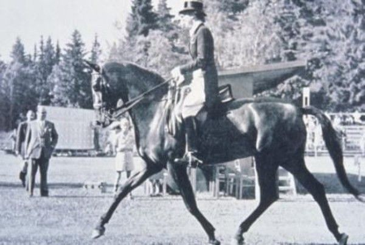
В 1944 году датская наездница Лиз Хартель заболела полиомиелитом, будучи беременной. Несмотря на то, что в результате болезни ее почти полностью парализовало, Лиз смогла родить здорового ребенка. Самое удивительное, что несмотря на весьма ограниченные двигательные способности, Лиз продолжила тренироваться, и через три года, в 1947 году, снова села на лошадь, несмотря на то, что ее ноги не двигались ниже колен. Она садилась и сходила с лошади с посторонней помощью, и несмотря на это, выиграла серебряную медаль в конном спорте на чемпионате в Дании 1952 года. На пьедестал почета девушка смогла подняться только с помощью золотого призера, шведа Генри Саинт Кира – вот что значит настоящая спортивная взаимовыручка! В последующие годы Лиз продолжала заниматься спортом, и получила еще одну серебряную медаль на олимпиаде 1956 года.
Кроме Лиз, в спортивных соревнованиях наивысшего уровня участвовали также однорукий стрелок Кароли Такакс, которому во время взрыва гранаты в армии оторвало правую руку. Спортсмен продолжил тренироваться, научился стрелять левой рукой и впоследствии выиграл золотые медали на играх 1948 и 1952 года.
Известен еще более уникальный случай – в 1904 году на Олимпиаде в Сент-Луисе американский гимнаст Джордж Эйзер выиграл одну бронзовую, две серебряных и три золотых медали. У этого гимнаста вместо одной ноги был деревянный протез.
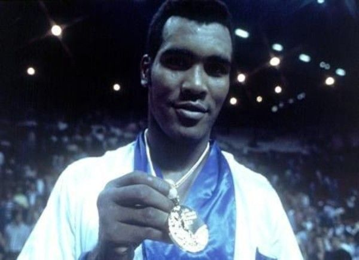
Кубинский боксер Теофилио Стевенсон на боксерском ринге был неуязвим. Он выступал в тяжелом весе, и на играх 1972 в Мюнхене победил своего оппонента за 30 секунд. Быстрый был боксер и сильный... После своей победы в 1972 году за него вплотную взялись различные промоутеры, чтобы он перешел в профессиональную лигу и заключил контракт, но Теофилио отвечал отказом. Он верил в идею коммунистической революции на Кубе и хотел биться только за свою родину. После очередной победы в Монреале в 1976 году промоутеры еще активнее стали предлагать ему контракты и деньги, но Теофилио отказался от миллионных гонораров, став национальным героем у себя на родине.
Третий раз золотую медаль боксер выиграл в 1980 году, в возрасте 28 лет. После этого, уйдя из большого бокса, кубинец стал работать учителем бокса, зарабатывая 400 долларов в месяц. Когда у него позже спрашивали, почему он отказался от больших денег, Теофилио отвечал: “Что мне все эти миллионы против 8 миллионов кубинцев, которые любят меня?”
В хоккей, как известно, играют настоящие мужчины, но тем не менее определенные правила в нем все-таки есть. Некоторым хоккеистам не удается сдержать себя, и тогда начинаются чудеса. Например, шведский хоккеист Карл Оберг в одной из игр против Канады в 1964 году настолько распереживался, что ударил канадского тренера Дэвида Бауэра клюшкой. Сам по себе этот поступок отвратителен, но все становится еще хуже, если добавить, что полное имя тренера – Отец Дэвид Бауэр, католический священник.
В другой команде или в другое время этот поступок вызвал бы грандиозный мордобой, но Дэвид публично простил Карла, символично накрыв его голову своим свитером, и призвал свою команду играть дальше и не мстить обидчику. Эта просьба была выполнена, а канадцы выиграли со счетом 3-2.
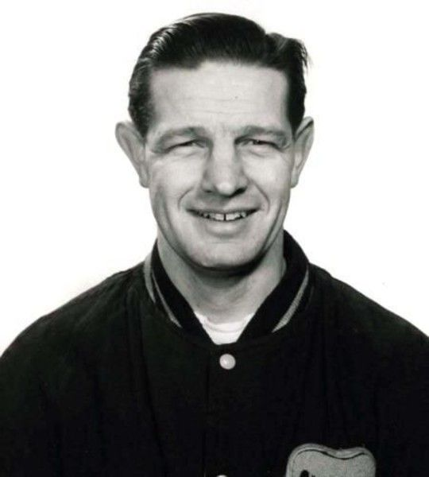
Свое плохое поведение демонстрируют не только спортсмены, но и болельщики. На играх 1956 года в Кортина д’Ампеццо, Италия, болельщики были настолько возмущены плохим результатом немецкой пары фигуристов – Марики Килиус и Франца Нингеля, что начали бросать в судей и тренера апельсины. Эта цитрусовая атака продолжалась, так что пришлось три раза очищать лед от посторонних предметов. Немецкая пара, несмотря на это, заняла четвертое место.
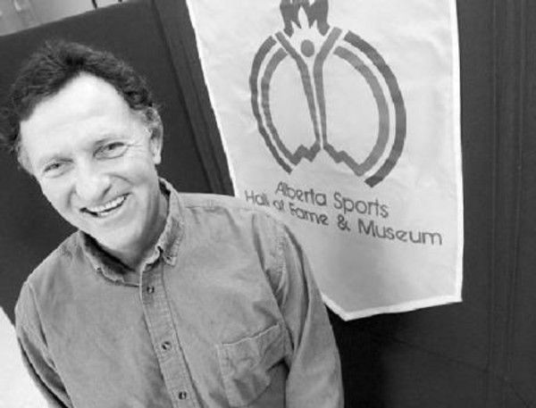
В 1988 году на играх в Сеуле канадец Лоуренс Лемье участвовал в парусной регате, протяженностью 450 километров, двигаясь по направлению к Бусану, второму по величине городу Южной Кореи, принимающей олимпиаду. Море было неспокойное, скорость ветра местами достигала 20 метров в секунду. Когда Лоуренс на своей яхте прошел половину дистанции, причем перед ним был только лидер гонки, он увидел неподалеку двух людей, оказавшихся командой яхты другого класса, участвовавшей в аналогичной гонке, проходившей параллельно. Джозеф Чан и Шо Хе Сью не справились с управлением и двухметровыми волнами, и при очередном порыве ветра их яхта перевернулась, травмировав обоих так, что спортсмены не имели возможности забраться обратно, барахтаясь в воде. Лоуренс изменил курс, поднял на борт двух спортсменов и дождался прибытия спасательного катера, забравшего их на свой борт. После этого канадец продолжил гонку, и в итоге пришел к финишу 22-м.
Самоотверженный поступок спортсмена не остался незамеченным, и на церемонии награждения победителей ему была вручена медаль имени Пьера де Кубертена – специальная награда за спортивную доблесть.
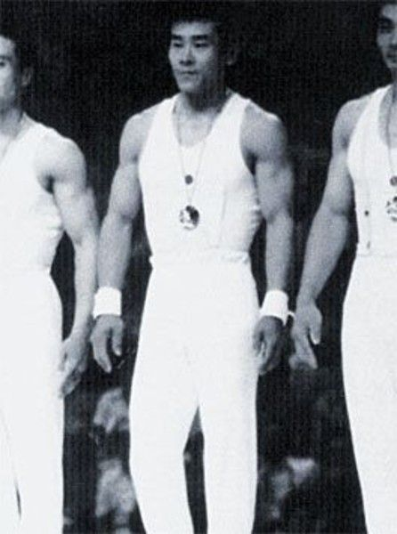
Японская мужская команда гимнастов выигрывала золотые медали с 1969 до 1972 года, поэтому на играх 1976 года получить золото стало для японцев делом чести. Однако жизнь внесла свои коррективы. Один из ведущих гимнастов, Шан Фуджимото, совершая очередное упражнение, почувствовал хлопок и резкую боль в колене. Он понял, что лопнула коленная чашечка, но не сказал об этом тренеру, потому что знал, что ему запретят выступать, а сравнимой замены в японской команде не было. Он не подавал виду, что чувствует сильную боль, полностью выполнил программу упражнений на бревне и получил 9.5 баллов из 10. Как сказал позже спортсмен, боль в колене помогла ему сконцентрироваться на идеальном исполнении номера, так как любое неверное движение привело бы к еще более болезненным и необратимым последствиям.
Следующим пунктом выступления были кольца. Выполнив все запланированное, спортсмен совершил тройное сальто и почти идеальное приземление, получив 9.7 балла, поставив персональный рекорд. После фиксации приземления Шан упал на пол от боли, и только тогда доктора узнали, что у него проблемы с коленом. Ему рекомендовали отказаться от дальнейшего участия, чтобы не стать инвалидом, а команда выложилась на все 100 процентов, выиграв с минимальным перевесом у команды СССР. Сказать тут нечего – японцы всегда славились своей “безбашенностью” в достижении цели.
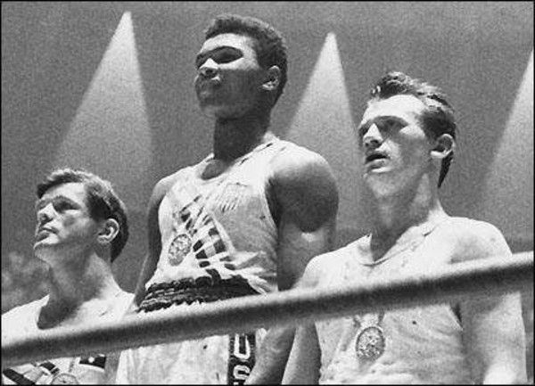
Речь пойдет о Кассиусе Клее, ставшим впоследствии Мухаммадом Али. На играх 1960 года в Риме он был отчаянным непобедимым 18-летним боксером, что принесло Кассиусу золотую медаль. Кроме своего мастерства Кассиус отличался дружелюбием и непосредственным поведением, завоевав расположение многих американцев. Один советский журналист на пресс-конференции с боксером попытался уязвить того, задав вопрос относительно расовой дискриминации в Америке. Кассиус ответил: “Мы в Америке работаем над искоренением этого явления, а кроме того, делаем лучшие в мире машины, выращиваем необходимую нам еду и вообще Америка – самая великая страна!”.
О мотивах советского журналиста я промолчу - в то время шла холодная война, и представители двух сверхдержав пытались пнуть друг друга побольнее. Вернемся, однако, к Кассиусу Клею. Вернувшись с соревнования, он не снимал свою золотую медаль, но даже при этом его не пустили в один из ресторанов, мотивировав это тем, что заведение для белых. После на улице на него напала банда белых отморозков, от которой он успешно отбился. Кассиус, по его словам, понял, что его медаль не стоит ничего, даже славы, и он, согласно популярной легенде, выбросил ее в реку Огайо.
Только 40 лет спустя, в 1996 году, олимпийский комитет вручил эту медаль Муххамаду Али во время олимпийских игр в Атланте.
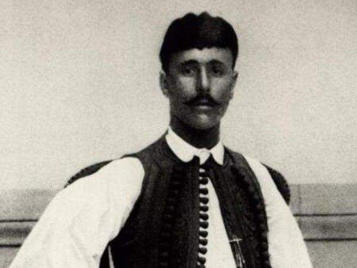
Когда французский историк Мишель Брил планировал первые современные олимпийские игры в 1896 году, он хотел связать их с древними олимпийскими играми. В качестве такого связующего звена было предложено использовать забег из Афин в город Марафон, что было сделано греком в древние времена, для того, чтобы принести известие о победе. Греческие бегуны загорелись этой идеей, и вовсю принялись тренироваться.
В то время, как бегуны других стран спустя рукава готовились к забегу, греческие спортсмены провели два отборочных забега, выбрав наиболее выносливых спортсменов для участия в олимпиаде. За исключением греков, в других командах только один бегун имел опыт марафонского забега, остальные тренировались практически “на кошках”.
И вот начался забег. Тренировки греков дали свои результаты, в отличие от других бегунов. Не дойдя и середины дистанции, иностранные спортсмены просто падали от напряжения. Через три часа после начала соревнования лидером стал грек Спиридон Луис, который с легкостью обошел всех соперников и даже сделал перерыв в беге, выпив бокал вина. Греческий принц Георгий и кронприц Константин настолько впечатлились успехами своего соотечественника, что пробежали с ним последний этап дистанции. Луис, обычный крестьянин, быстро стал национальным героем, и даже стал героем поговорки – “быть Луисом” на его родине означает “бежать быстро”.
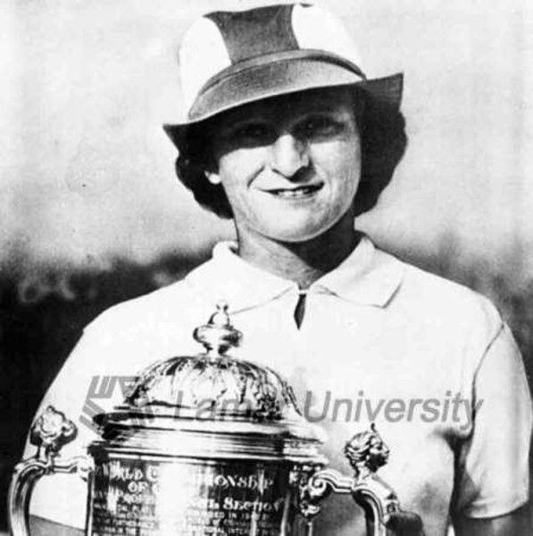
В олимпийских играх 1932 года в Лос Анджелосе принимала участие 19-летняя машинистка пи имени Милдред Дидриксон. Девушка готовилась к участию в пяти видах спорта, но в правила были внесены коррективы, согласно которым один спортсмен может соревноваться не более чем в трех дисциплинах. Милдред выбрала метание копья, бег с барьерами на 80 метров и прыжки в высоту, так как удерживала мировой рекорд по всем этим видам спорта.
Первое ее выступление оказалось неудачным – копье соскользнуло с руки и повредило хрящ в правом плече. Для другого спортсмена это означало бы отказ от дальнейшего участия, но девушка продолжила борьбу, бросив копье во второй попытке на 43 с половиной метра, установив новый мировой рекорд. Через два дня она же установила рекорд уже в беге с препятствиями, и была готова продолжать борьбу. однако, в прыжке в высоту она была дисквалифицирована из-за того, что прыгнула “рыбкой” вперед головой, что в то время было нарушением правил. После всех этих приключений Милдред “довольствовалась” серебряной медалью.
Вообще говоря, девушка была выдающейся отваги. Она говорила своим соперникам перед состязаниями: “Yep, I’m gonna beat you” (Ага, я тебя сделаю), а во время тренировок доводила спортсменов своей команды до бешенства, наматывая вокруг них круги и играя на губной гармошке.
Участием в этих видах спорта деятельность Милдред не ограничилась. В 1935 году она занялась игрой в гольф, и в 1950 году выиграла все возможные титулы, доступные женщине в этом виде спорта. Она считается одним из величайших игроков всех времен среди женщин и мужчин. В своей автобиографии она написала: “Моя цель – быть самым лучшим спортсменом всех времен”. Нескромно, но вполне справедливо.
И под занавес - еще одна интересная история.
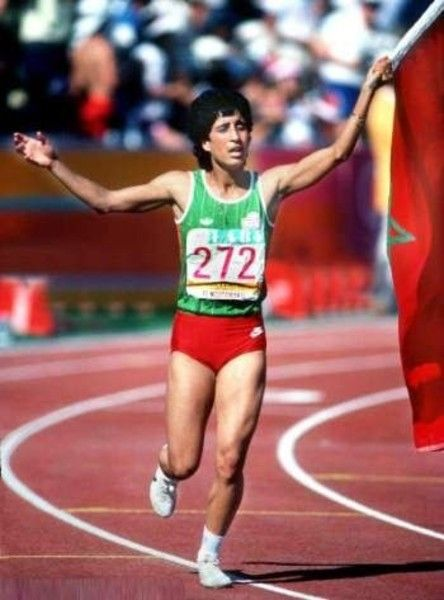
Эту историю можно назвать историей Золушки. Проведя свое детство на улицах Касабланки, марокканка Эль Мутавакел использовала свои спортивные умения для получения стипендии и поступления в Университет Айовы, где выиграла несколько чемпионатов Big Eight. В 1984 году она стала единственной женщиной в марокканской олимпийской сборной на играх в Лос Анджелесе.
Девушка пробежала 400-метровку с барьерами быстрее всех, принеся своей стране первую золотую медаль. При этом она стала первой мусульманкой и первой представительницей Африканского континента, выигравшей золотую медаль. В то время, когда Эль совершала круг почета по стадиону, ее соотечественники на родине ликовали, признав в ней своего национального героя (еще бы!)
Пользуясь своим успехом, Эль решила не останавливаться на достигнутом, и помочь другим женщинам по всему миру предъявить свои спортивные достижения (тогда с этим было туго), и вершиной ее усилий стала организация 10-километрового женского забега в Касабланке, который до сих пор собирает десятки тысяч участниц. Как министр по делам спорта и семьи и ведущий специалист в интернациональном олимпийском комитете, Эль способствовала выбору Лондона как олимпийской столицы 2012 года.
Однажды эта смелая женщина сказала: “Моя спортивная жизнь началась с 400-метрового забега с барьерами, и это схема всей моей жизни – двигаться и преодолевать препятствия”